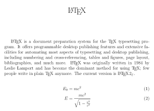
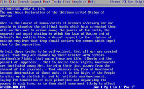
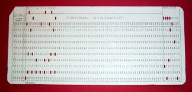
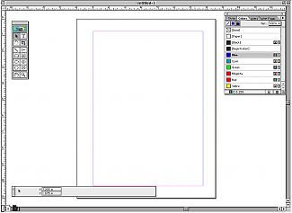
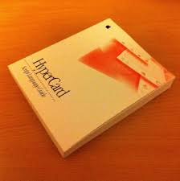

Programs
LaTeX (1984)
LaTeX is a document preparation system and document markup language. It is widely used for the communication and publication of scientific documents in many fields, ranging from informatics (also known as computer science) to economics. It also has an important role in the preparation and publication of books and articles that contain complex multilingual materials, such as Sanskrit and Arabic. LaTeX documents can be opened with any text editor.
Microsoft Office (1988)
 Microsoft Office is an office suite of desktop applications, servers and services for the Microsoft Windows and OS X operating systems. It was first announced by Bill Gates of Microsoft on August 1, 1988, at COMDEX in Las Vegas. Initially a marketing term for a bundled set of applications, the first version of Office contained Microsoft Word, Microsoft Excel and Microsoft PowerPoint
MATLAB (1984)
MATLAB is a multi-paradigm numerical computing environment, intended primarily for numerical computing. An optional toolbox uses the MuPAD symbolic engine, allowing access to symbolic computing capabilities. An additional package, Simulink, adds graphical multi-domain simulation and Model-Based Design for dynamic and embedded systems.
Lotus (1982)
Lotus (called Lotus Development Corporation before its acquisition by IBM) was an American software company most commonly known for the Lotus 1-2-3 spreadsheet application, the first feature-heavy, user-friendly, reliable and "what you see is what you get"-enabled product to become widely available in the early days of the IBM PC, when graphical user interfaces did not exist. Much later, in conjunction with Ray Ozzie's Iris Associates, Lotus also released a groupware and email system, Lotus Notes.
Aldus Pagemaker (1985)
Introduced in 1985 by Aldus, PageMaker was one of the first desktop publishing programs, initially for the then-new Apple Macintosh and in 1987 for PCs running Windows 1.0. Being an application relying on a graphical user interface, PageMaker helped to popularize the Macintosh platform and the Windows environment.
Hypercard (1987)
Apple engineer William Atkinson designed HyperCard, a software tool that simplifies development of in-house applications. HyperCard differed from previous programs of its sort because Atkinson made it interactive rather than language-based and geared it toward the construction of user interfaces rather than the processing of data. In HyperCard, programmers built stacks with the concept of hypertext links between stacks of pages. Apple distributed the program free with Macintosh computers until 1992.
External links
- [visited on 05/11/2014] Computer History
- [visited on 05/11/2014] Latex
- [visited on 05/11/2014] WordPerfect
- [visited on 05/11/2014] Matlab
- [visited on 05/11/2014] Lotus
- [visited on 05/11/2014] Pagemaker
- [visited on 05/11/2014] Pagemaker
{kind=link}